---Signage planning---
植物のようせいと学ぶ東山植物園
東山植物園の現状問題を解決し
植物を楽しく学ぶためのサイン計画
◴ 2021/4/21-2021/6/4 ✎ Illustrator Photoshop AfterEffect

---Signage planning---
植物のようせいと学ぶ東山植物園
東山植物園の現状問題を解決し
植物を楽しく学ぶためのサイン計画
◴ 2021/4/21-2021/6/4
✎ Illustrator Photoshop AfterEffect
OUTCOME

DESIGN PROCESS
現状分析
ユーザー調査
コンセプト
アプローチ
方法決定
東山植物園の現状
ユーザーは年齢層高めでかつ植物に詳しいリピーターが多い。
園内のサインは簡素で説明的なデザインであり、
植物園にあまり来たことのない人には理解しづらいデザインである。
植物園に来たことのない人が
楽しく学べるデザインにしよう！
東山植物園のユーザー調査
平日はリピーターの高齢者、晴れた休日は親子連れが多い。
調査によるとこれは動物園に遊びに来たついでに植物園に寄ったり、
温室リニューアルをきっかけに散歩しに来た人たちだった。
新規ユーザーにも植物園の魅力を伝えたい！
ターゲット→親子連れに決定
どんな価値を与えたいか
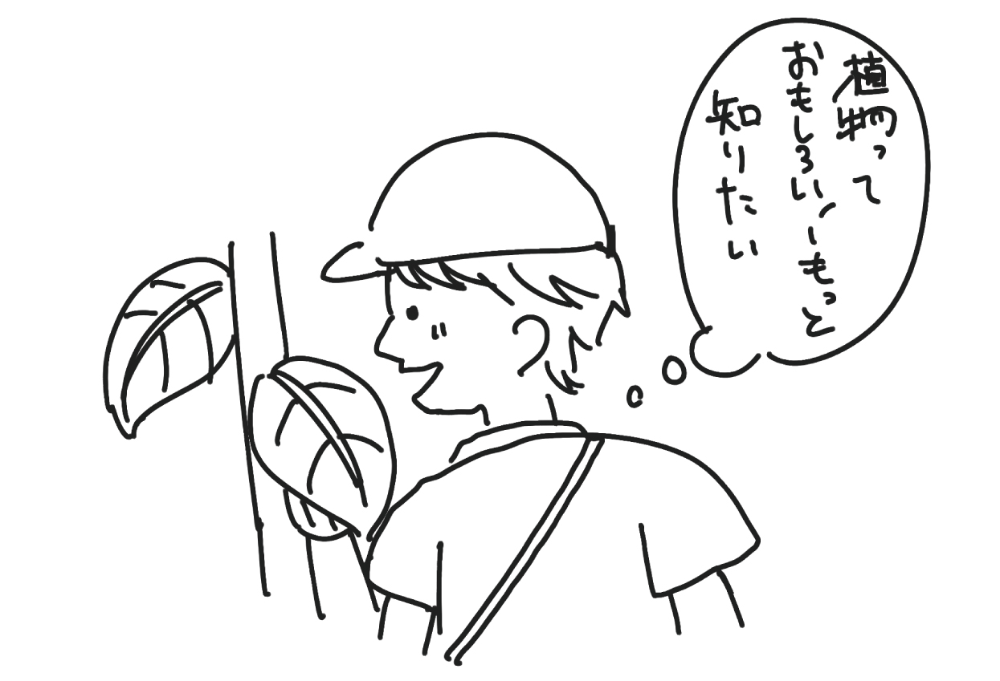「動物園のついでに植物園に来た」など軽い気持ちで訪れたユーザー
にも植物について面白い知識を知ってもらい、
植物を楽しく学んでほしい！
植物園でも家族の楽しい思い出の時間を過ごしてもらいたい！
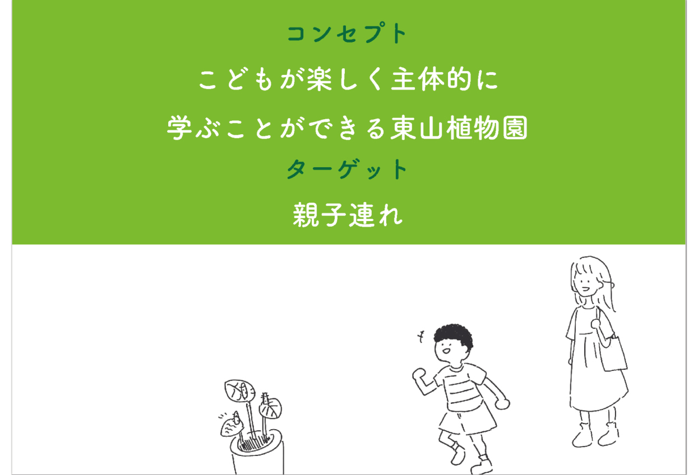アプローチ方法
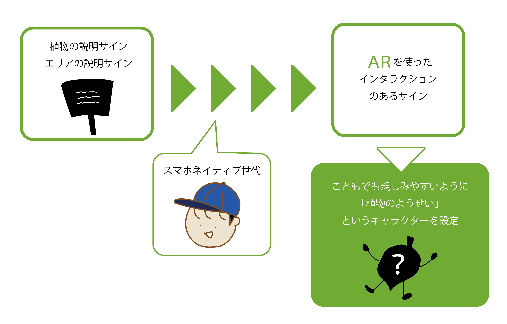エリアをわかりやすく説明する
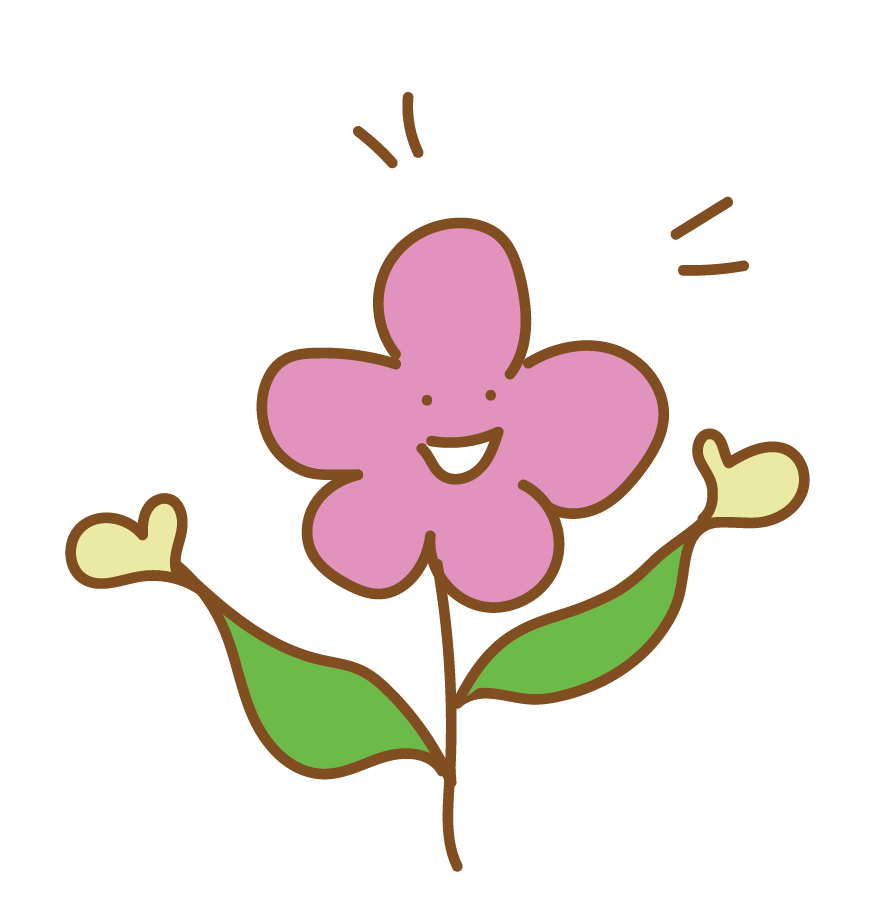ARインタラクションで
楽しく学ぶ
迷子・混雑を防ぐ
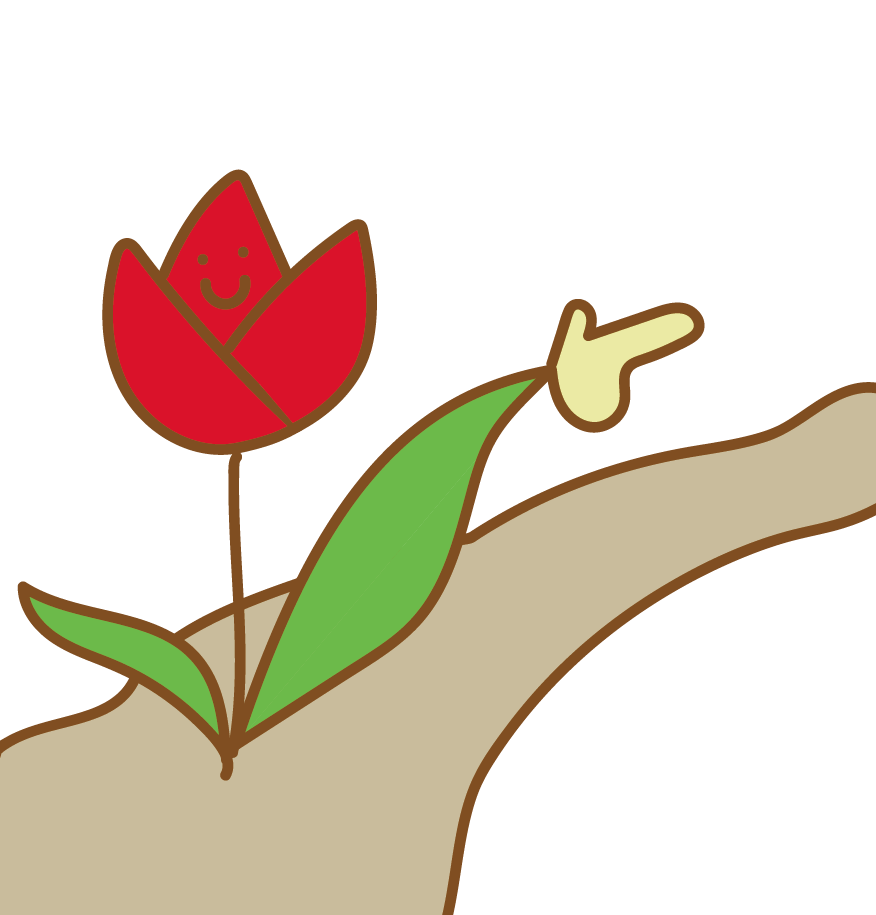雨の日等危ない道を教える
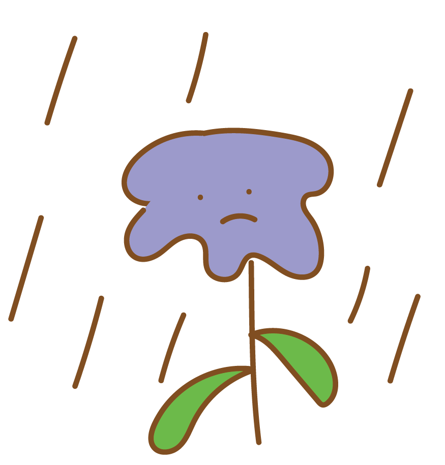WORK
---説明サイン---
スマホネイティブ世代に合わせたARを使ったサイン。植物の妖精が登場し植物の説明をする。
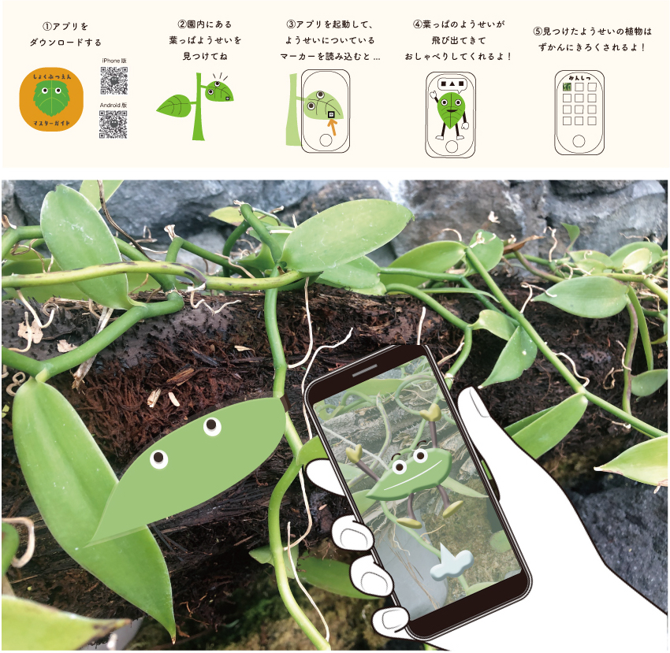説明サインARコードから視聴できる動画 (ex:バニラ)
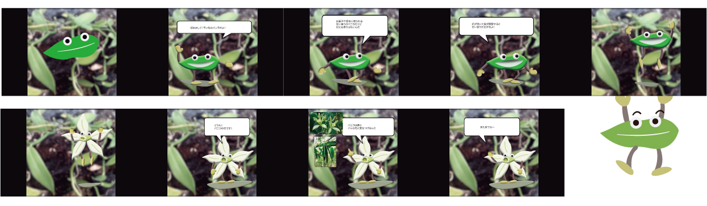---園内マップ---
◆ 紙マップ
各エリアの植物の妖精やランドマークのイラスト、エリアの豆知識動画が見れるARマーカーを掲載した。 ターゲットのこどもに合わせて難しい漢字をなくしたり、全ての漢字にふりがなを振っている。
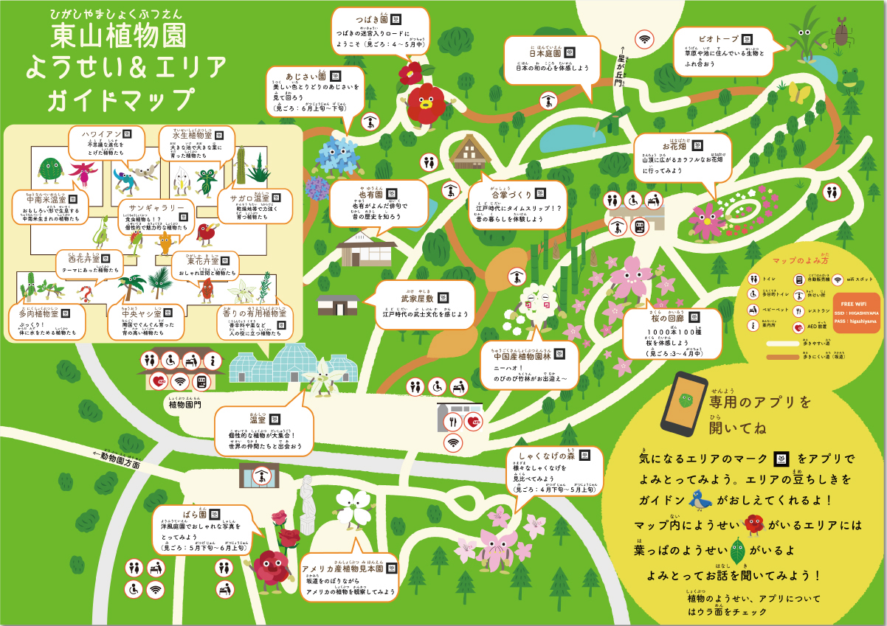 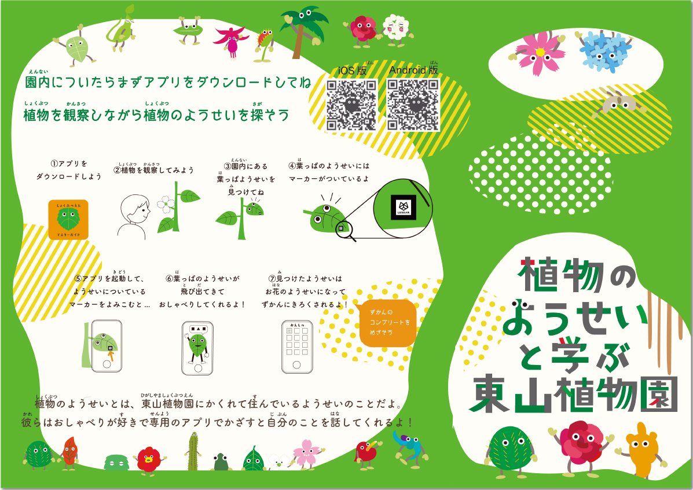マップ内ピクトグラム
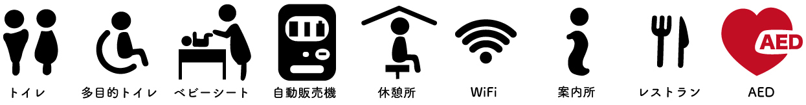紙マップARコードから視聴できる動画 (ex:シャクナゲエリア)
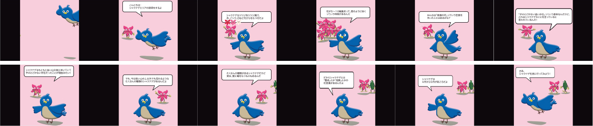◆ エントランスマップ
ターゲットに合わせた低い視点の台で紙マップに比べ少なめの短時間で理解しやすい情報量を掲載した。
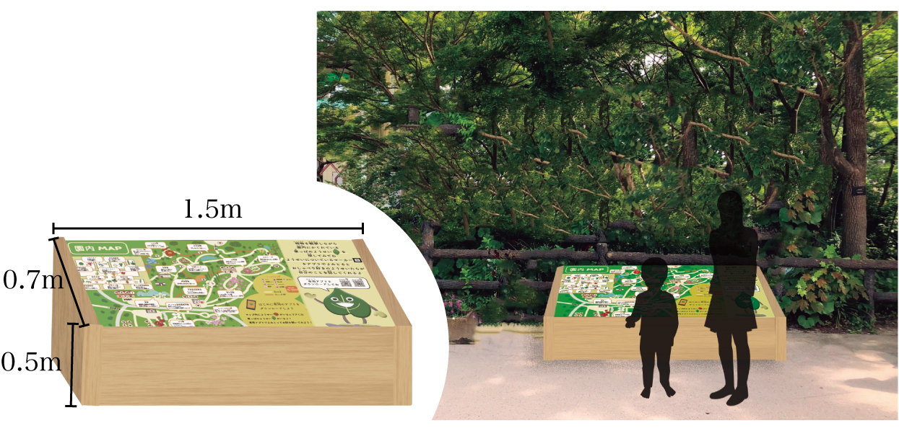 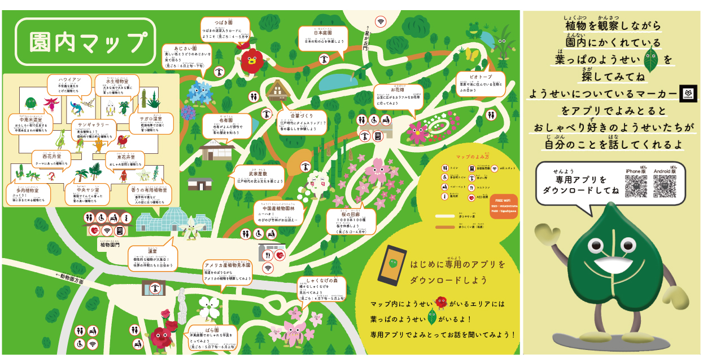---誘導サイン---
マップと同じイラストを載せ、位置を確認できるようにする。 温室は混雑を防ぐため一方通行の誘導サインを用意し、ARで写すと植物の妖精が出てくる隠しコマンド的要素がある。
---注意サイン---
足元の悪い道や立ち入り禁止の場所に設置する看板。 子供に伝わりやすいコミカルなデザイン。
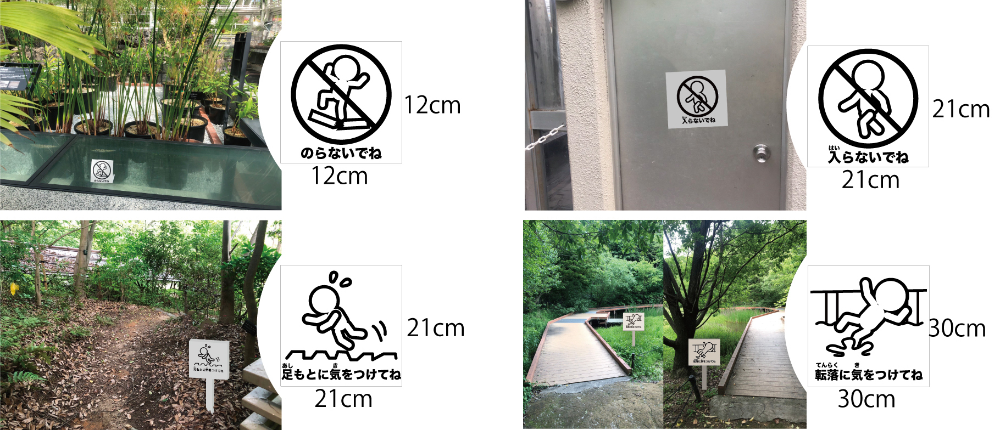